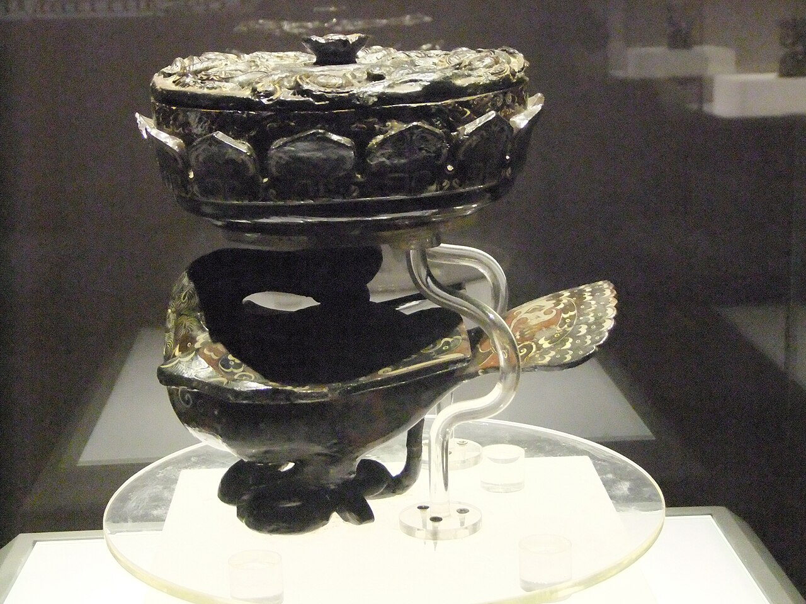

约前 689
楚文王迁都于郢
荆州成为楚国政治与文化的中心，为楚式漆艺的孕育与繁盛提供了土壤。
国家级非物质文化遗产 · 湖北荆州
CHU LACQUERWARE · JINGZHOU · HUBEI
玄漆为底，朱金为纹。两千余年前，楚人以凤为魂、以漆为语，在荆州留下中国漆器发展史上的第一座高峰。

荆州 · 楚文化发祥地 · 长江中游
2400+
年 · 楚漆传承不绝
5000+
件 · 荆州楚墓出土漆器
20道
核心制作工序
60+
道 · 精品层层髹漆
壹ARCHIVE · 非遗档案
在荆州，漆不是一种材料，而是一种时间的语言。楚人早在春秋战国时期便以漆为墨、以木为纸，把凤鸟、云气与神话绘进日常器皿。黑漆为夜，朱漆为火，金彩为星——一件漆器，便是一方微缩的楚天。
楚式漆器髹饰技艺以楠木、樟木为胎，经选料、雕刻、榫卯、刮灰、髹漆、彩绘、描金、推光等近二十道工序完成。它讲究「三分雕，七分彩」，造型奇崛而纹样灵动，被公认为中国漆器发展史上的第一座高峰。
2011 年，这项技艺以「漆器髹饰技艺（楚式漆器髹饰技艺）」列入第三批国家级非物质文化遗产代表性项目名录。今天的荆州，仍有匠人以数月乃至数年的耐心，让两千年前的朱与黑继续发亮。
顺着时间，走进楚漆贰CHRONICLE · 千年漆脉
从楚都郢的宫室器用到今天的博物馆展柜，楚漆从未真正离开荆州。它只是换了一种方式，继续讲述楚人的浪漫。
荆州成为楚国政治与文化的中心，为楚式漆艺的孕育与繁盛提供了土壤。
楚人崇凤尚赤，以黑漆为底、朱金为彩。榫卯髹漆彩绘木雕自成一格，奇异的造型与流动的纹样，构成中国漆器史上的第一座高峰。
楚地漆器工艺延续不辍，器型与纹样影响后世，朱与黑的审美基因深植荆楚。
荆州楚墓出土漆器数以千计，让两千年前的朱与黑重新见光。漆器上的凤鸟、云气与人物，成为理解楚人精神世界的重要窗口。
「漆器髹饰技艺（楚式漆器髹饰技艺）」入选第三批国家级非物质文化遗产代表性项目名录，编号 Ⅷ-127。
非遗传承院、现代学徒制与文创开发并行。老手艺走进课堂，也走进茶器、文房与当代生活。
叁CRAFT · 髹饰之道
「髹」是用漆涂物，「饰」是以漆饰器。一件楚漆，从木胎到幽光，要穿过近二十道工序，也穿过匠人数月乃至数年的等待。
以楠木、樟木为胎。木性稳定，纹理细密，是一件漆器能够长久保存的第一重根基。
木胎分件雕刻、榫卯组合，器物既灵动又牢固。奇崛的造型之下，是楚人对结构的精巧理解。
榫卯反复刮灰、砂光、清灰，让胎体平整如镜。只有底子足够安静，漆面才会真正温润。
灰胎天然大漆层层髹涂，精品需六七十道。温度、湿度与时间都要拿捏，急不得，也省不得。
大漆以黑漆为底，朱、黄、金错彩。凤鸟云气在器表流转，所谓「三分雕，七分彩」，正是楚漆的灵魂。
彩绘经数月乃至数年，反复推光。漆面由涩转润，幽光内敛，像一段被时间打磨过的夜色。
推光三分雕，七分彩
楚漆之美，一半在刀，一半在漆与色。黑漆为夜，朱金为霞，凤鸟云气在其间游走。
割漆人翻山越岭，数百刀才得一斤生漆，天然大漆从来来得不易。
天然生漆耐腐蚀、耐高温，许多楚漆器历经两千余年仍色泽如新。
髹漆、阴干、推光，每一步都要等。慢，是这门手艺最昂贵的成本。
肆COLLECTION · 馆藏珍品
以下影像来自荆州博物馆藏楚漆器实拍。放大看，黑漆之上，朱与金的线条仍在流动。
藏品名称依公开影像资料整理，具体以馆方说明为准。
楚 漆 纹 样 · 凤 鸟 与 云 气
黑漆为夜，朱金为霞
两千年前的楚人，把神话画进了日常器物。
楚漆纹样（局部）· 荆州博物馆藏伍FILM · 影像
比起成品的光泽，纪录片更愿意把镜头留给工序与等待。那些重复的动作，才是楚漆真正的秘密。
纪录片《漆髹守艺》以荆州传统漆艺为拍摄对象，聚焦传承人邹传志与工坊匠人，记录从制胎、髹漆到纹饰打磨的日常。
它不急于展示成品，而是把时间还给手艺本身：一层漆干透，再上一层；一道纹描完，再描一道。
陆INHERITANCE · 守艺之人
手艺的传承，从来不只是技法的传递。它更像一场漫长的相互打磨：人守住漆，漆也塑造人。
人磨漆，漆磨人
长期从事楚式漆器制作与传承，守护榫卯、髹漆、彩绘等核心工序，让古老的楚漆技艺在荆州延续。
既复刻楚国漆器精品，也把楚漆带进茶器、文房与饰品，让非遗重新回到当代生活的日常之中。
如今，荆州通过非遗传承院、现代学徒制与民间传统工艺专业培养后继人才。老手艺的下一程，正由年轻的手继续书写。
柒JOURNEY · 寻漆荆州
如果文字与影像还不够，就去荆州走一趟。看真品、看工坊、看古城暮色里那一抹熟悉的朱红。
走进楚漆真品面前，看朱漆与黑漆如何在两千年后依然发亮。凤鸟、云气与镇墓兽，构成理解楚人的入口。
荆州市荆州区荆中路
看传承人制胎、髹漆、描金，理解一件漆器为何要以月、以年计。慢，是这里最值得体验的部分。
湖北荆州 · 建议提前查询开放信息
登城墙、望长江故道，把楚地的水汽、暮色与漆器的红一起收进旅程。历史在这里不是展柜，而是风景。
荆州市荆州区 · 荆州古城墙
1 – 2 天
春秋两季
以官方公告为准
馆内请勿使用闪光灯